01
立石工務店
木の架構が、働く場所と暮らしの気配を包み込む。
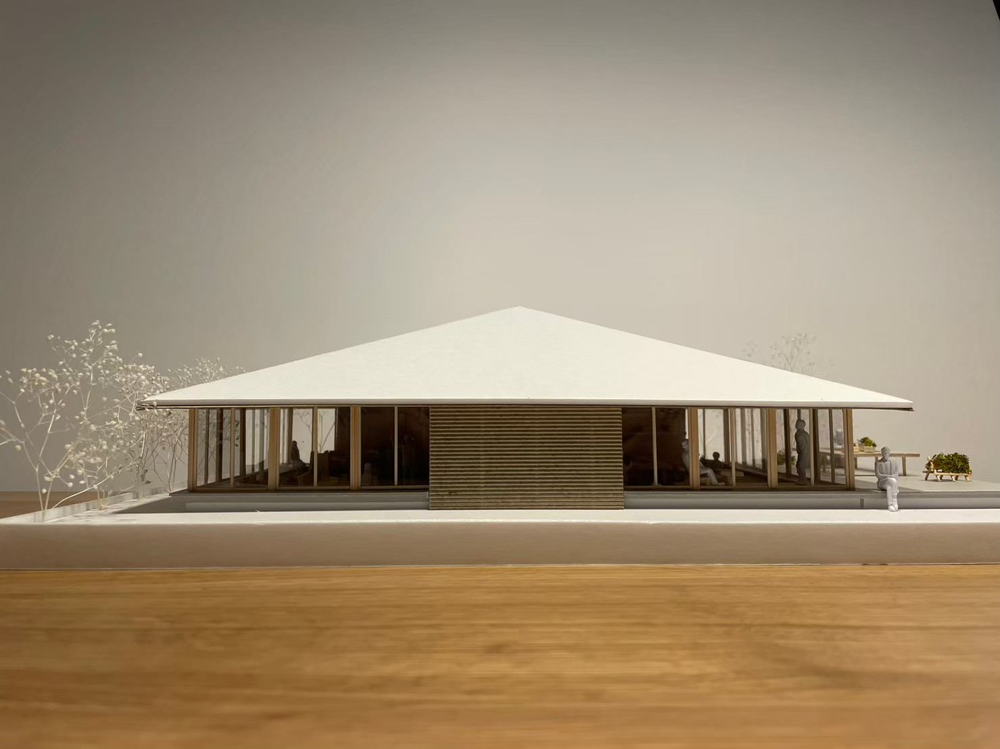
いつかここから飛び立ちたい
建築は、新しく何かをつくることではなく、
その土地にある風景や、人の営みを丁寧に読み解くことから始まると考えています。
そこには、暮らしの積み重ねや、土地の記憶、受け継がれてきた物語があります。
私たちは、その場所らしさを大切にしながら、
これまでの物語を受け取り、
これからの物語へと繋いでいくことを目指します。
01
木の架構が、働く場所と暮らしの気配を包み込む。

02
コンサート以外の時間を設計する。
コンペ提案
03
土地の気候と木の架構から、集う場所をつくる。
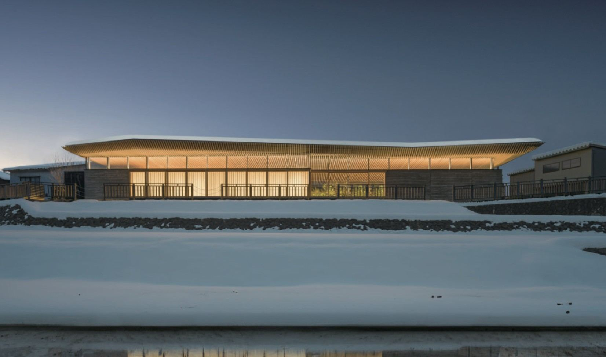

05
木の手ざわりが、働く時間をやわらげる。
06
椎茸小屋と廃材から、新しい風景をつくる。
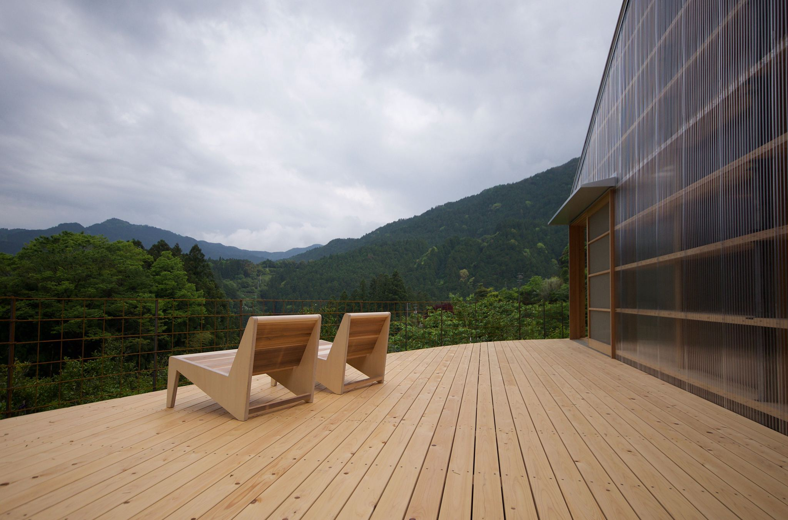
07
世代を超えて人が交わる、新しい福祉施設の風景。
わくわくデザイン＋水津功先生と協働 ／ 外構設計担当
08
緑あふれる学びの風景をつくる。
理工学部棟・社会学部棟・情報学部棟・カフェ棟
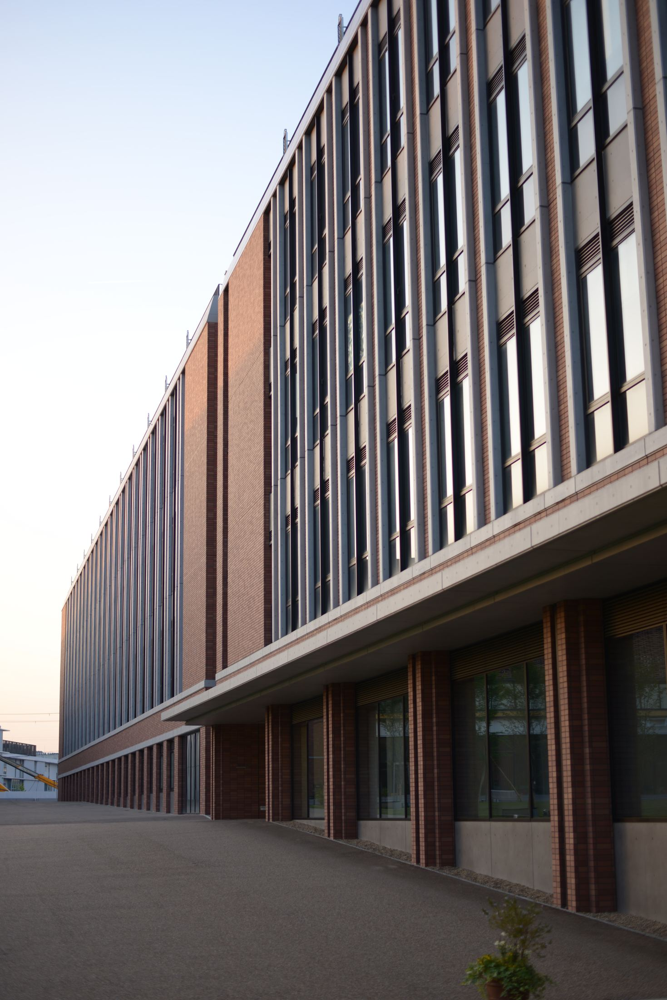
09
光と風を整え、暮らしの余白をつくる。
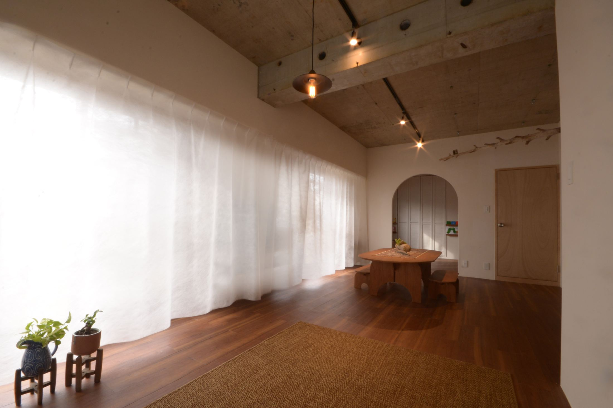
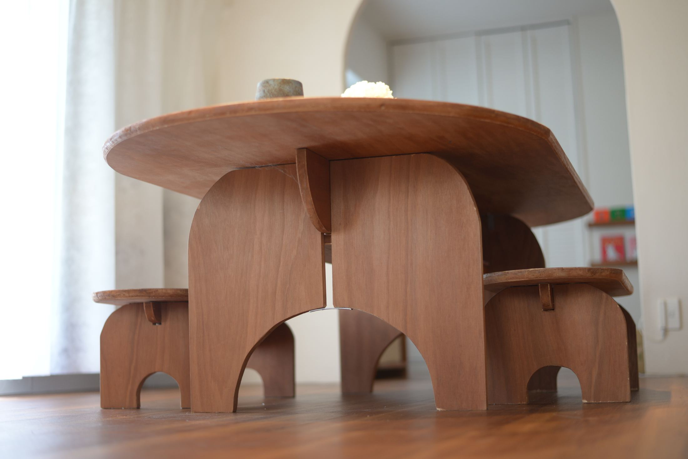
10
街に開かれた、日常のための公共建築。
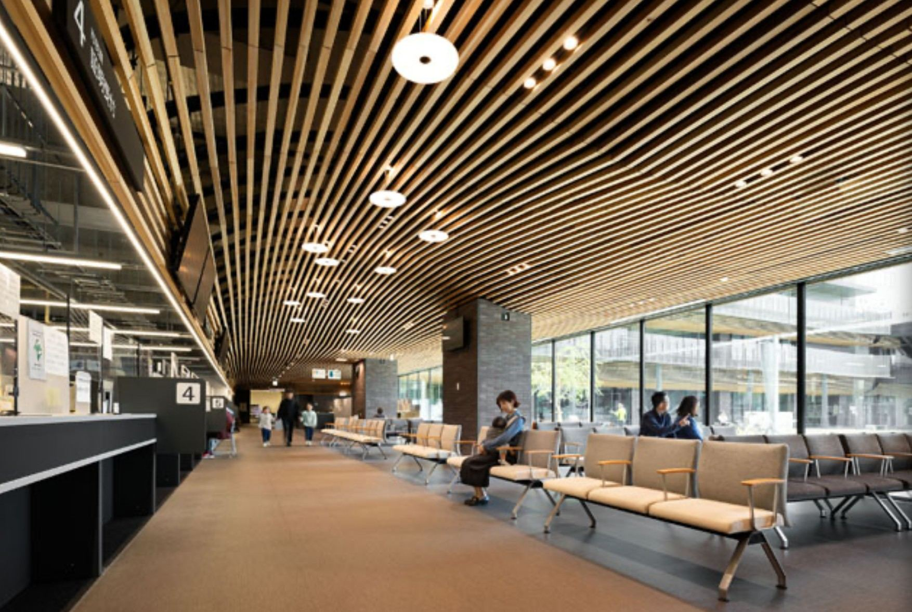
11
都市の賑わいを受け止める、立体的な回遊空間。
ATグループ
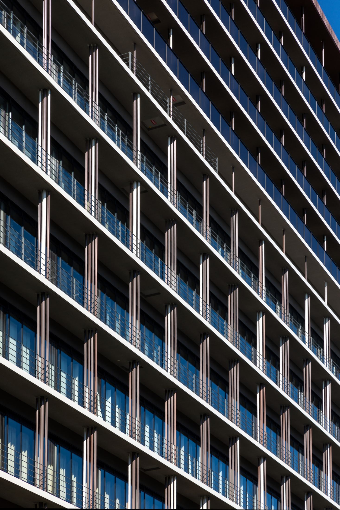
12
日々の学びを支える、やわらかな居場所をつくる。
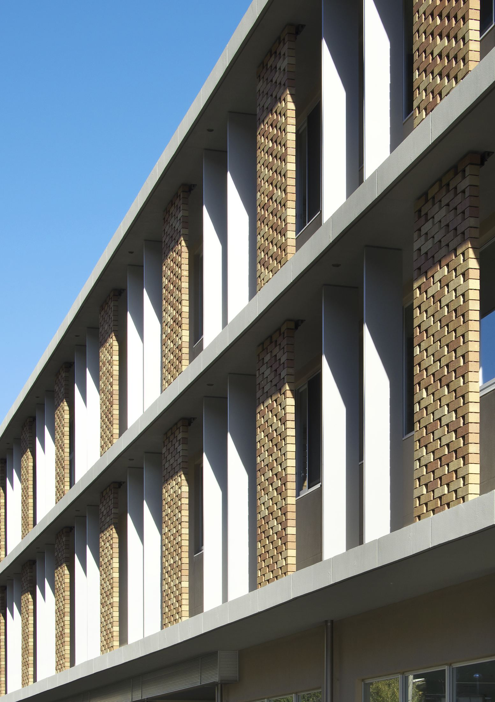
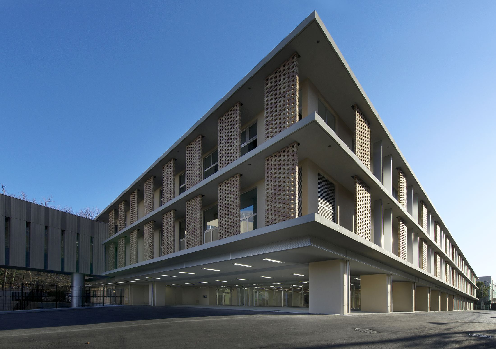
studio20というユニット名は、20歳で初めて設計競技に挑んだことに由来しています。
トップページの写真は、その設計競技を提出した明け方に撮影した、船橋キャンパスの滑走路です。
いつかここから飛び立ちたい。
そんな想いを抱いてシャッターを切ったこの風景は、今も変わらず私たちstudio20の原点の景色です。
1988年 埼玉県生まれ
日本大学理工学部建築学科 卒業
松田平田設計を経て独立
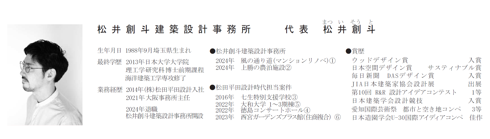
1988年 千葉県生まれ
日本大学理工学部建築学科 卒業
竹中工務店 設計部
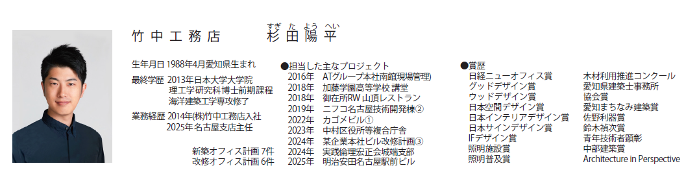
杉山洋太氏は後日追加予定